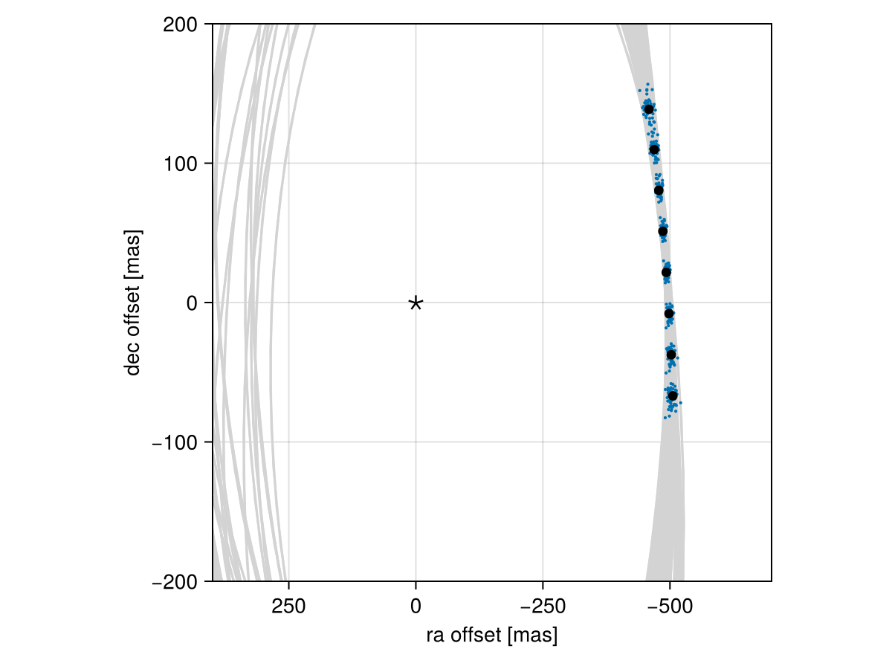

Posterior Predictive Checks
A posterior predictive check compares our true data with simulated data drawn from the posterior. This allows us to evaluate if the model is able to reproduce our observations appropriately. Samples drawn from the posterior predictive distribution should match the locations of the original data.
To demonstrate, we will fit a model to relative astrometry data:
using Octofitter
using Distributions
astrom_like = PlanetRelAstromLikelihood(Table(;
epoch= [50000,50120,50240,50360,50480,50600,50720,50840,],
ra = [-505.764,-502.57,-498.209,-492.678,-485.977,-478.11,-469.08,-458.896,],
dec = [-66.9298,-37.4722,-7.92755,21.6356, 51.1472, 80.5359, 109.729, 138.651,],
σ_ra = fill(10.0, 8),
σ_dec = fill(10.0, 8),
cor = fill(0.0, 8)
))
@planet b Visual{KepOrbit} begin
a ~ truncated(Normal(10, 4), lower=0.1, upper=100)
e ~ Uniform(0.0, 0.5)
i ~ Sine()
ω ~ UniformCircular()
Ω ~ UniformCircular()
θ ~ UniformCircular()
tp = θ_at_epoch_to_tperi(system,b,50420) # reference epoch for θ. Choose an MJD date near your data.
end astrom_like
@system Tutoria begin
M ~ truncated(Normal(1.2, 0.1), lower=0.1)
plx ~ truncated(Normal(50.0, 0.02), lower=0.1)
end b
model = Octofitter.LogDensityModel(Tutoria)
using Random
Random.seed!(0)
chain = octofit(model)Chains MCMC chain (1000×28×1 Array{Float64, 3}):
Iterations = 1:1:1000
Number of chains = 1
Samples per chain = 1000
Wall duration = 3.16 seconds
Compute duration = 3.16 seconds
parameters = M, plx, b_a, b_e, b_i, b_ωy, b_ωx, b_Ωy, b_Ωx, b_θy, b_θx, b_ω, b_Ω, b_θ, b_tp
internals = n_steps, is_accept, acceptance_rate, hamiltonian_energy, hamiltonian_energy_error, max_hamiltonian_energy_error, tree_depth, numerical_error, step_size, nom_step_size, is_adapt, loglike, logpost, tree_depth, numerical_error
Summary Statistics
parameters mean std mcse ess_bulk ess_tail rh ⋯
Symbol Float64 Float64 Float64 Float64 Float64 Float ⋯
M 1.1897 0.0956 0.0043 505.0070 387.9868 1.00 ⋯
plx 49.9994 0.0193 0.0007 867.5579 526.0011 1.00 ⋯
b_a 11.6771 2.3103 0.1737 171.0444 339.7757 0.99 ⋯
b_e 0.1589 0.1088 0.0068 270.6389 249.3773 1.00 ⋯
b_i 0.6387 0.1547 0.0109 207.4897 225.0259 0.99 ⋯
b_ωy -0.0873 0.7247 0.0550 194.8158 561.0269 1.00 ⋯
b_ωx -0.0659 0.6982 0.0550 173.9539 674.3650 1.01 ⋯
b_Ωy -0.2036 0.7266 0.0980 63.9441 489.7963 1.00 ⋯
b_Ωx -0.1518 0.6528 0.0917 59.3963 349.1122 1.00 ⋯
b_θy 0.0755 0.0103 0.0004 688.2825 660.9260 1.00 ⋯
b_θx -1.0112 0.0994 0.0040 609.2988 579.4884 1.00 ⋯
b_ω -0.4131 1.8710 0.1290 287.2006 632.9315 1.00 ⋯
b_Ω -0.8571 1.8605 0.2106 107.6718 363.7688 1.00 ⋯
b_θ -1.4962 0.0071 0.0003 734.6148 601.8661 1.00 ⋯
b_tp 43199.7104 4729.4213 319.0570 274.8580 267.4786 1.00 ⋯
2 columns omitted
Quantiles
parameters 2.5% 25.0% 50.0% 75.0% 97.5%
Symbol Float64 Float64 Float64 Float64 Float64
M 1.0140 1.1224 1.1910 1.2545 1.3773
plx 49.9598 49.9866 50.0003 50.0119 50.0364
b_a 8.2603 10.0363 11.2140 12.9092 16.8397
b_e 0.0055 0.0663 0.1441 0.2339 0.3820
b_i 0.3159 0.5315 0.6501 0.7512 0.9109
b_ωy -1.0776 -0.7603 -0.1868 0.6182 1.0760
b_ωx -1.0672 -0.7117 -0.1574 0.5983 1.0721
b_Ωy -1.0887 -0.8646 -0.4211 0.5275 1.0310
b_Ωx -1.0749 -0.7366 -0.2749 0.4433 1.0199
b_θy 0.0572 0.0689 0.0745 0.0816 0.0980
b_θx -1.2176 -1.0799 -1.0086 -0.9404 -0.8274
b_ω -3.0123 -2.1945 -0.4584 1.1681 2.9963
b_Ω -3.0368 -2.5116 -1.6539 0.6258 2.9628
b_θ -1.5097 -1.5010 -1.4964 -1.4913 -1.4819
b_tp 32059.1957 40732.8858 44041.9292 46532.8566 50091.0211
We now have our posterior as approximated by the MCMC chain. Convert these posterior samples into orbit objects:
# Instead of creating orbit objects for all rows in the chain, just pick
# every twentieth row.
ii = 1:20:1000
orbits = Octofitter.construct_elements(model, chain, :b, ii)50-element Vector{Visual{KepOrbit{Float64}, Float64}}:
Visual{KepOrbit{Float64}, Float64}(KepOrbit(11.4, 0.0199, 0.567, 2.34, 0.234, 45900.0, 1.17), 49.97798578053057, 4.1271171052346136e6)
Visual{KepOrbit{Float64}, Float64}(KepOrbit(14.0, 0.0816, 0.782, -2.84, 0.439, 48000.0, 1.26), 50.00301809793625, 4.125051003841568e6)
Visual{KepOrbit{Float64}, Float64}(KepOrbit(11.8, 0.0536, 0.69, -2.32, 3.64, 43000.0, 1.34), 49.98474241840482, 4.1265592262820466e6)
Visual{KepOrbit{Float64}, Float64}(KepOrbit(11.0, 0.0436, 0.594, -1.35, 3.77, 45700.0, 1.15), 49.98729988709292, 4.1263481017357195e6)
Visual{KepOrbit{Float64}, Float64}(KepOrbit(8.71, 0.262, 0.332, -1.99, 3.01, 44800.0, 1.2), 49.969071724644664, 4.1278533476992818e6)
Visual{KepOrbit{Float64}, Float64}(KepOrbit(15.9, 0.378, 0.806, -2.96, 3.06, 32800.0, 1.27), 49.98681329300777, 4.126388269460911e6)
Visual{KepOrbit{Float64}, Float64}(KepOrbit(10.3, 0.106, 0.613, -1.41, 4.08, 47000.0, 1.29), 50.00930996301635, 4.124532015189577e6)
Visual{KepOrbit{Float64}, Float64}(KepOrbit(11.1, 0.0901, 0.663, 2.09, 0.779, 46700.0, 1.14), 50.02775408140705, 4.123011392123616e6)
Visual{KepOrbit{Float64}, Float64}(KepOrbit(14.5, 0.124, 0.744, 2.21, 3.46, 33500.0, 1.15), 50.009386933112886, 4.124525667068817e6)
Visual{KepOrbit{Float64}, Float64}(KepOrbit(8.6, 0.218, 0.362, -2.24, 3.67, 45300.0, 1.01), 50.01123584197855, 4.1243731838929043e6)
⋮
Visual{KepOrbit{Float64}, Float64}(KepOrbit(9.97, 0.212, 0.478, 0.927, 6.07, 43400.0, 1.31), 49.99467576390132, 4.1257393282052996e6)
Visual{KepOrbit{Float64}, Float64}(KepOrbit(11.9, 0.0747, 0.611, -2.37, 0.794, 50100.0, 1.14), 49.99741063883237, 4.1255136488967794e6)
Visual{KepOrbit{Float64}, Float64}(KepOrbit(14.0, 0.282, 0.765, 0.245, 6.26, 35800.0, 1.11), 50.00230620613709, 4.125109732932355e6)
Visual{KepOrbit{Float64}, Float64}(KepOrbit(10.8, 0.0806, 0.527, 0.952, 4.48, 38700.0, 1.03), 50.009523784683, 4.1245143802624093e6)
Visual{KepOrbit{Float64}, Float64}(KepOrbit(8.3, 0.309, 0.275, 1.33, 6.05, 44900.0, 1.03), 50.009347786747256, 4.124528895669008e6)
Visual{KepOrbit{Float64}, Float64}(KepOrbit(9.32, 0.164, 0.473, 2.01, 4.95, 44100.0, 1.3), 49.95815720990979, 4.12875517272052e6)
Visual{KepOrbit{Float64}, Float64}(KepOrbit(10.2, 0.0583, 0.709, 1.49, 4.63, 42000.0, 1.33), 49.99353017111963, 4.1258338687823974e6)
Visual{KepOrbit{Float64}, Float64}(KepOrbit(11.9, 0.15, 0.699, -0.316, 4.22, 48700.0, 1.13), 49.99200983421631, 4.1259593419831838e6)
Visual{KepOrbit{Float64}, Float64}(KepOrbit(11.0, 0.144, 0.614, -2.51, 3.41, 42300.0, 1.16), 49.97458554932959, 4.1273979110121313e6)Calculate and plot the location the planet would be at each observation epoch:
using CairoMakie
epochs = astrom_like.table.epoch' # transpose
x = raoff.(orbits, epochs)[:]
y = decoff.(orbits, epochs)[:]
fig = Figure()
ax = Axis(
fig[1,1], xlabel="ra offset [mas]", ylabel="dec offset [mas]",
xreversed=true,
aspect=1
)
for orbit in orbits
Makie.lines!(ax, orbit, color=:lightgrey)
end
Makie.scatter!(
ax,
x, y,
markersize=3,
)
fig
Makie.scatter!(ax, astrom_like.table.ra, astrom_like.table.dec,color=:black, label="observed")
Makie.scatter!(ax, [0],[0], marker='⋆', color=:black, markersize=20,label="")
Makie.xlims!(400,-700)
Makie.ylims!(-200,200)
fig
Looks like a great match to the data! Notice how the uncertainty around the middle point is lower than the ends. That's because the orbit's posterior location at that epoch is also constrained by the surrounding data points. We can know the location of the planet in hindsight better than we could measure it!
You can follow this same procedure for any kind of data modelled with Octofitter.